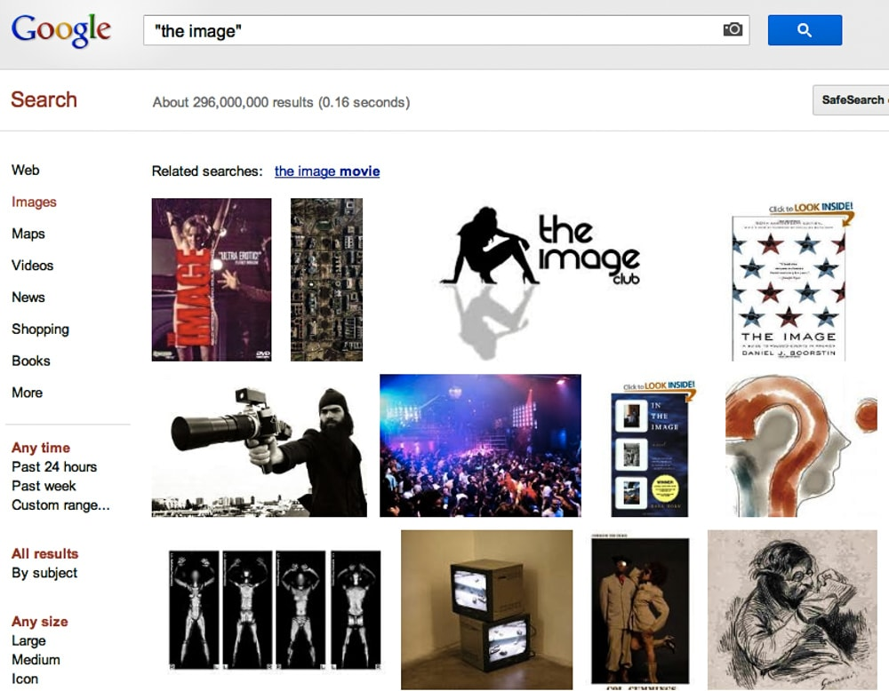

Manifestations of The Readers Project
in reverse chronological order within categories
Installations :
- Next Horizons, the ELO Media Arts Festival. Victoria, BC. Jun 10–12
- Read For Us – and show us the pieces selected for exhibition at ISEA 2015 in 'NEW TEXT' held at the Goldcorp Centre for the Arts, Simon Fraser University, Vancouver, Canada, August 14-19.
- The True Story of Ah-Q selected for The Writing Machine Collective, 5th edition (WMC_e5): 'TRACING DATA: What you Read is not What we Write' at Connecting Space-HK, Oct 9-22, 2014.
- How It Is in Common Tongues included in 'Monoclonal' Gallery space of Counterpath publishers, Denver, 15 Nov-8 Dec 2013.
- How It Is in Common Tongues selected for the 'Virtual Gallery' associated with 'Chercher le Texte' (see Performances below) 24 Sept 2013.
- From The Readers Project selected for the Social Life of Forms at the Creative Media Center, Kowloon Tong, Hong Kong, 21-23 Mar 2013.
- Common Tongues featured in 'Remediating the Social' Inspace Gallery Edinburgh, 1-17 Nov 2012.
- Poetic Caption selected for the 'Poetry Beyond Text: Vision, Text and Cognition' exhibition at the Royal Scottish Academy in association with Duncan of Jordanstone College of Art, Edinburgh, Scotland, 12 Nov-18 Dec 2011.
- Installation from The Readers Project included in the gallery show of E-Poetry 2011, SUNY, Buffalo, 18-21 May 2011.
- Installation from The Readers Project in the 'Poetry Beyond Text Project' gallery show, Dundee Contemporary Arts (DCA), Dundee, Scotland, 4 Mar-1 Apr 2011.
- Poetic Caption from The Readers Project selected for the RISD Faculty Show, Providence, RI, 4 Mar-1 Apr 2011.
- Installation from The Readers Project for the OLE (Officina di Letteratura Elettronica) Workshop of Electronic Literature, PAN Museum (Palazzo delle Arti Napoli), Naples, 20-21 Jan 2011.
- Read for Us selected for the Faculty Triennial Exhibition, David Winton Bell Gallery, Brown University, 4 Dec 2010-12 Feb 2011.
- Installation from The Readers Project selected for the First Works Pixilerations Festival, Providence RI, 30 Sep-10 Oct 2010.
- Installation from The Readers Project included in the Arts Program of 'ELO_AI: Archive and Innovate' the 4th international conference of the Electronic Literature Organization, Brown University, Providence, 3-6 June 2010.
- Misspelt Landings from The Readers Project selected for 'PW10 Performance Writing 2010' at the Arnolfini Gallery, Bristol, UK, 8 May 2010.
- Installation from The Readers Project featured in the juried gallery show for 'The Future of Digital Studies', University of Florida, Gainesville, 25-27 Feb 2010.
- Presentation and performance of How It Is in Common Tongues at the Electronic Literature Organization Conference 'Chercher le Texte', Unversité Paris 8, 26 Sept 2013. (Cayley)
- Performance from How It Is in Common Tongues for a reading at Counterpath publishers, Denver, 15 Nov 2013. (Cayley)
- Presentation and performance of How It Is in Common Tongues at the E-Poetry Conference and Festival, Kingston University, London, 20 June 2013. (Cayley)
- Presentation and performance of How It Is in Common Tongues at the tenth HASTAC Conference, York University, Toronto, 26 June 2013. (Cayley)
- Presentation and performance of How It Is in Common Tongues for 'Digital Writing' at the AWP Conference, Boston, 8 Mar 2013. (Cayley)
- Performance from The Readers Project for 'The Future of Digital Studies', University of Florida, Gainesville, 27 Feb 2010. (Cayley & Howe)
- Performance from 'The Readers Project' at the 'Literary Extravaganza' of the Digital Arts and Culture conference, UC Irvine 14 Dec 2009. (Cayley & Howe)
- 'Reading Robots Writing Readers' invited lecture at the Run Run Shaw Creative Media Center, City University of Hong, 26 Mar 2014. (Cayley)
- 'Beginning with 'The Image' in How It Is when translating certain processes of digital language art' for 'Translation Outside the Text' at the ALTA (American Literary Translators Association) conference, Bloomington, 19 Oct 2013. (Cayley)
- 'Reading and Giving—Voice and Language' keynote on The Readers Project for 'Transformations of the Image and Text', University of Western Sydney, Sydney, 25 July 2013. (Cayley)
- 'Ceux l'[image] encore / une image langue: beginning with How It Is when translating certain processes of electronic literature' for Translating E-literature conference, Université Paris 8, 13 June 2012. (Cayley)
- 'Writing to be Found and Writing Readers' keynote presentation for 'The Future of Digital Studies' conference 2010, University of Florida, Gainesville, 27 Feb 2010. (Cayley)
- Talk and demonstration on The Readers Project for the 'Purple Blurb' series, MIT, Program in Writing and Humanistic Studies, 28 Apr 2010. (Cayley & Howe)
- Auto-collaged print made for the installation 'The Real Story of Ah-Q' by Daniel C. Howe and based on scans from the Chinese text of the 1961 edition of Lu Xun's Collected Works (魯迅全集), 2014.
- How It Is in Common Tongues. Providence: NLLF Press, 2012. (Limited edition conceptual literary artists' book.)
- The Image. Providence: NLLF Press, 2012. (Limited edition conceptual literary artists' book.)

